Introduction
OWL 2 Web Ontology Language -- Structural Specification and Functional-Style Syntax (Second Edition)
The Name "Athene"
Athene cunicularia -- Burrowing Owl
CLI Tools
Document
Draw
UI Tools
Editor
Navigator
Nocturn: A Visual Language for OWL
Athene noctua -- Little Owl
Nocturn is another entry in the space of visual representations for OWL, and therefore RDF Schema as well. It's intent is to be as simple as possible for the most common cases, with extensibility for complex scenarios. Nocturn (named for a species of owl, Athene noctua, the Little Owl) tries to use as few basic building blocks as possible, with strict rules on presentation and style to allow for even simple tools such as GraphViz to be used as a renderer.
Some attempts at visual representations have proven too simple and make it very hard to represent even mildly complex cases, others have a set of so many low-level primitives that a representation of a mildly complex case looks like a spider-web of interconnected nameless nodes.
At the end of some chapters there will be sections entitled Tool Notes and these will be non-normative thoughts on tool implementations for supporting Nocturn. These may be suggestions on interaction with the visual representation, possible ways of scaling to multi-ontology editing, and so on, but may provide useful insights beyond the language definition itself.
Example
The following is a simple model showing three classes, Person, Employee,
and Organization along with a new datatype Identifier. Through the rest of
this book, we will use the smaller, green, italic, type to indicate the
underlying RDF, RDF Schema, or OWL relationship that a visual structure
represents. So, you can see the sub-class relationship between employee and
person, and so forth.
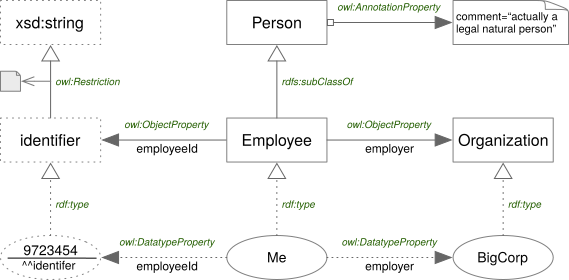
Simple Employee Ontology
The example also shows how the individuals Me, BigCorp, and
9723454^^:identifier are related to their types and to each other.
The following is the same model in Turtle. Note that examples throughout will typically show either Turtle or the OWL Functional Syntax and sometimes both.
:Person a owl:Class ;
rdfs:comment "actually a legal natural person" .
:Employee a owl:Class ;
rdfs:subClassOf :Person .
:Organization a owl:Class .
:identifier a rdfs:Datatype
owl:onDatatype xsd:string ;
owl:withRestrictions (
[ xsd:pattern "^\\d{5,10}-[A-Z]{1}\\d{5}$" ]
) .
:employeeId a owl:DatatypeProperty .
rdfs:domain :Employee ;
rdfs:range :identifier .
:employer a owl:ObjectProperty .
rdfs:domain :Employee ;
rdfs:range :Organization .
:BigCorp a :Organization .
:Me a :Employee ;
:employeeId "9723454"^^:identifier ;
:employer :BigCorp .
Common Notation Rules
- Node and Edge Lines
- Line strokes must be single, with no shadows or other effects.
- Line weights must be light, in the
0.75..=1.75ptrange. - Line color must be dimmer than that of the text so that the text is
more readable. The examples here use the SVG color name
grayor the RGB value#808080.
- Node Labels
- Labels must be centered horizontally and should be centered vertically.
- Do not use font styles, bold, italic, or other forms for name labels.
- Do not use color for name labels.
- Whether to display prefixes for names is a tool choice, but must be available to the user to disambiguate same names in different namespaces.
Line Styles
To denote classes and individuals from datatypes and literals Nocturn uses solid vs. dotted lines as shown in the following figure.

Line Styles
Edge Ending Shapes
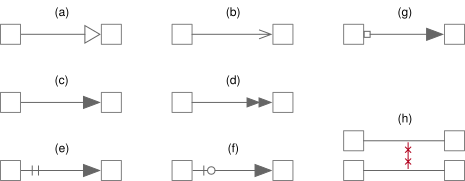
Edge Ending Shapes
- An open, equilateral triangle, denoting a sub-type relation. Hereafter termed open triangle.
- An open arrow head, generally with the same proportions as (a). Hereafter termed stick arrow.
- A closed, isosceles triangle with a narrow base, denoting an
owl:ObjectProperty. Hereafter termed filled triangle. - A double closed, isosceles triangle with a narrow base, denoting an
owl:TransitivePropertyproperty. Hereafter termed double open triangle. - Two short perpendicular lines across the edge at the source, denoting an equivalence relation. Note that the target end must be a (c) triangle. Hereafter termed double bar.
- An open circle and one short perpendicular lines across the edge at the source, denoting a negative equivalence relation. Note that the target end must be a (c) triangle. Hereafter termed bar and circle.
- An open square at the source, attached to the shape, denoting an
owl:AnnotationProperty. Note that the target end must be a (c) triangle. Hereafter termed open box. - Two short lines crossing the edge at both source and target, denoting an
owl:disjointWithrelation. Hereafter termed crosses.
In the above notation the use of a small circle on the non-equivalent relationship denoting negation is used in the same manner as the common notation in circuit symbols for logic gates nand, nor and so forth.
Tool Notes
There are a number of use cases where a tool needs to indicate a Focus Element whether a node or edge. For example, you search for a node by name, you ask to create a new view with all relations radiating from a given starting node, etc. In such cases the easiest and most in-line with the style rules above is to increase the weight of the element; increase the line weight, increase the size of (probably only directly attached) edge shapes, increase the weight of the node's label and so forth.
Ontology Relations
Corresponds to section 3.2 of the OWL 2 Structural Specification.
Ontology Nodes

Ontology Nodes and Edges
Ontology Node Rules
- The node's shape must be a folder, a rectangle with a small tab on the top-left corner.
- The diagram above shows the preferred form with a sloped rectangular tab on the left.
- The alternate, acceptable, form with a plain rectangular tab on the right.
- An ontology node may have the following edges attached:
- Ontology imports.
- Ontology dependencies.
- General axioms.
- Annotation properties.
Imports

Ontology Imports
Ontology(
<http://www.example.com/importing-ontology>
Import( <http://www.example.com/my/2.0> )
...
)
Imports Rules
- The edge must be a solid line with a filled triangle at the target.
- There must be at most one edge between any pair of ontology nodes.
- These edges have no labels.
Dependencies and Prefixes

Ontology Dependencies and Prefix Assignment
Prefix(
dcterms: = <http://purl.org/dc/terms/>
)
Ontology(
<http://www.example.com/ontology1>
Annotation( dcterms:title "An example" )
)
Note the example diagram also shows the annotation to show the usage of the declared prefix "dcterms".
Dependency and Prefix Rules
- The edge must be a dottes line with a filled triangle at the target.
- The edge may have a label, all labels originating from the same source
ontology must be unique.
- As these are the prefix to qualified name it is not legal to include the
colon (
':', UnicodeU+003A) character in the name. - This implies there can be at most one unlabeled dependency edge.
- As these are the prefix to qualified name it is not legal to include the
colon (
Tool Notes
For Visual Navigation a navigable view of interconnected ontology nodes is a good way to understand the manner in which they are used as well as the popularity, or not, of those in your network. Additional graph metrics can help provide insights as well as simple visualization.
The folder shape must not be used to render a preview of the ontology diagram, given that we would encourage any non-trivial ontology to have any number of diagrams as different views into the same ontology. In this way the folder icon is chosen as a way to think of it as a collection of these views.
In reading an Ontology and finding either imports or prefix declarations it is possible, in fact preferrable to add a folder node, but may be not so preferrable to fetch the associated resource (especially not to do so transitively!). This means that tools should provide a way to represent ontology States; for example those that have been discovered but is not actually resolved, resolved and cached, and those moved from the cache to local a workspace for editing.
Nodes
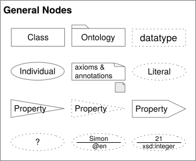
All Nodes
Classes

A Class Node
Class Rules
- The overall shape is a rectangle, it's must be greater than it's height, and corners must be hard, not rounded.
- Node lines must be solid.
Datatypes

A Datatype Node
Datatype Rules
- The overall shape is a rectangle, it's must be greater than it's height, and corners must be hard, not rounded.
- Node lines must be dotted.
- More space must exist between dots than the width of the dots for clarity.
Individuals

An Individual Node
Individual Rules
- The overall shape is an ellipse, it's must be greater than it's height.
- Node lines must be solid.
Literals

A Literal Node
Extended Notation
:thing :value "?" .
:thing :name "Simon"@en .
:thing :age "21"^^xsd:integer .
Specific Literal Type Nodes
Literal Rules
- The overall shape is an ellipse, it's must be greater than it's height.
- Node lines must be dotted.
- More space must exist between dots than the width of the dots for clarity.
- If the value is a
langStringa horizontal bar must separate the value above from the language identifier with the prefix@character. - If the value...
- If the value (ellide...) ...
Properties
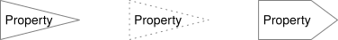
Properties as Nodes
Property Rules
- The overall shape for Object and Datatype properties must be an isosceles triangle with a narrow base and with it's apex pointed to the right.
- The overall shape for Annotation properties must be an pointed flag with a longer rectangle and trangular apex to the right.
- Lables in all property nodes must be left justified so they are not lost in the apex.
- Object and Annotation properties are represented with solid lines.
- Datatype properties are represented with dotted lines.
Axioms and Annotations

Axiom and Annotation Nodes
Notes:
- Both Axiom and Annotation nodes have identical appearance and differ only in how they are associated to other nodes.
- Both kinds of nodes can be elided to an icon form, an interactive tool may allow for clicking on the icon to edit the content inline or in a dialog.
Axiom and Annotation Rules
- The node's shape must be a note, a rectangle with a folded-over top-right corner.
- Text content must be left-aligned, not centered.
- Text content may be top-aligned rather than the usual vertical centering.
- Axioms must be represented in a well-known and standard representation such as the OWL Functional Syntax or Manchester Syntax.
- Annotations may be represented in either a tabular name/value form, or as textual "name=value" form.
- The icon form of the note shape must be a small, square, note, and must be
filled with a light shade (
#ebebebin our example). - As axiom content may be consider code-like, it is acceptable to use a monospaced code font as an alternative.
Class Assertions
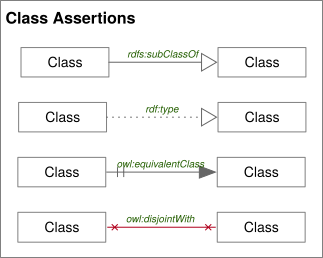
Overview of Class Assertions
rdfs:subClassOf
An RDF Schema subClassOf Edge
rdfs:subClassOf Rules
TBD
rdf:type
An RDF type-of Edge
rdf:type Rules
TBD
owl:equivalentClass
An OWL equivalentClass Edge
owl:equivalentClass Rules
TBD
owl:disjointWith
An OWL disjointWith Edge
owl:disjointWith Rules
Object Properties
Object Properties, in general, are shown as directed edges between class nodes.
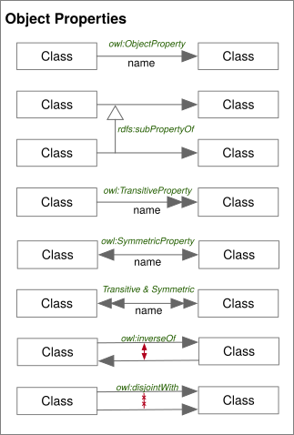
Object Properties
The following sections outline the notation for common property types, and patterns.
owl:ObjectProperty

An OWL ObjectProperty Edge
owl:ObjectProperty Rules
TBD
rdfs:subPropertyOf
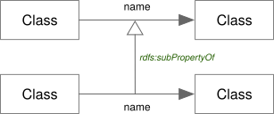
An RDF Schema subPropertyOf Edge
rdfs:subPropertyOf Rules
TBD
owl:inverseOf

An OWL inverseOf Edge
owl:inverseOf Rules
TBD
owl:SymmetricProperty

A OWL SymmetricProperty Edge
owl:SymmetricProperty Rules
TBD
owl:TransitiveProperty

A OWL TransitiveProperty Edge
owl:TransitiveProperty Rules
owl:SymmetricProperty and owl:TransitiveProperty

An OWL SymmetricProperty and OWL TransitiveProperty Combined Edge
owl:Symmetric/TransitiveProperty Rules
TBD
Datatype Assertions
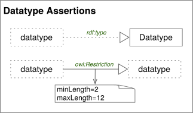
Datatype Assertions
rdf:type
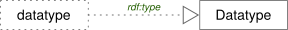
An RDF type-of Edge
rdf:type Rules
TBD
Datatype owl:Restriction Notation
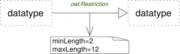
An OWL Restriction Edge and Axiom Node
Datatype owl:Restriction Rules
TBD
Datatype Properties
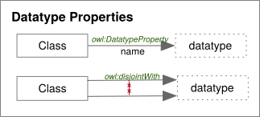
Datatype Properties
owl:DatatypeProperty

An OWL DatatypeProperty Edge
owl:DatatypeProperty Rules
TBD
owl:disjointWith
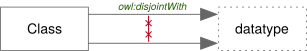
An OWL disjointWith Edge
owl:disjointWith Rules
TBD
Annotation Properties
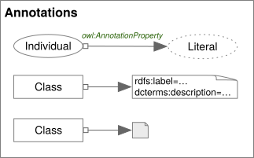
Annotation Properties
Property Notation
An AnnotationProperty as Property Notation
Property Notation Rules
TBD
Axiom Notation
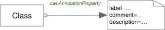
An AnnotationProperty as Axiom Notation
Axiom Notation Rules
TBD
Individual Assertions
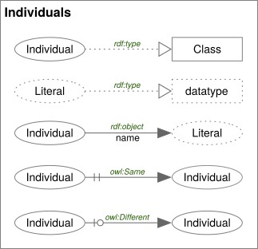
Individual Assertions
Property Assertion
An RDF object Edge
owl:sameAs

An OWL sameAs Edge
owl:sameAs Rules
TBD
owl:differentFrom

An OWL differentFrom Edge
owl:differentFrom Rules
TBD
Extended Property Notation
Object Properties
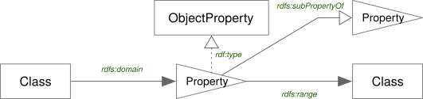
Object Property Extended Notation
TBD
ObjectProperty Node Rules
- There must be exactly one ObjectProperty edge for which this node is the target; the property denotes the source Class as the domain of the property.
- There must be exactly one ObjectProperty edge for which this node is the source; the property denotes the target as the range of the property.
- The node may be the source of any number of RDF type edges, but the edge
target must be a sub-class of
owl:ObjectProperty. - The node may be the source of any number of RDF Schema subPropertyOf edges, but the edge target must be another ObjectProperty node.
Simple ObjectProperty subPropertyOf
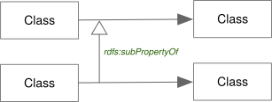
Datatype Properties
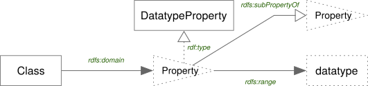
Datatype Property Extended Notation
TBD
DatatypeProperty Node Rules
- There must be exactly one ObjectProperty edge for which this node is the target; the property denotes the source Class as the domain of the property.
- There must be exactly one DatatypeProperty edge for which this node is the source; the property denotes the target as the range of the property.
- The node may be the source of any number of RDF type edges, but the edge
target must be a sub-class of
owl:DatatypeProperty. - The node may be the source of any number of RDF Schema subPropertyOf edges, but the edge target must be be another DatatypeProperty node.
Annotation Properties
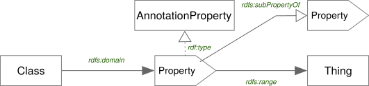
Datatype Annotation Extended Notation
TBD
AnnotationProperty Node Rules
- There must be at most one ObjectProperty edge for which this node is the
target; the property denotes the source Class as the domain of the property.
- It is common for the domain to be left unspecified for annotation properties to allow for their wide use across different cases.
- There must be at mose one DatatypeProperty edge for which this node is the
source; the property denotes the target as the range of the property.
- It is common for the range to be left unspecified for annotation properties to allow for their wide use across different cases.
- The node may be the source of any number of RDF type edges, but the edge
target must be a sub-class of
owl:AnnotationProperty. - The node may be the source of any number of RDF Schema subPropertyOf edges, but the edge target must be be another AnnotationProperty node.
Class and Value Expressions

Logical

:exampleProperty a owl:ObjectProperty ;
rdfs:subPropertyOf owl:topObjectProperty ;
rdfs:domain :Class ;
rdfs:range [
a owl:Class ;
owl:unionOf (
:ClassA
:ClassB
)
] .
Logical Rules
TBD
Enumeration

Enumeration Rules
TBD
All Different

All Different Rules
TBD
Datatype Restrictions

Datatype Restrictions Rules
TBD
General Axioms
General Usage
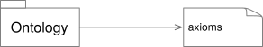
General Usage Rules
TBD
On Properties
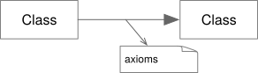
Shared Axioms
Wine Ontology
Ontology Header
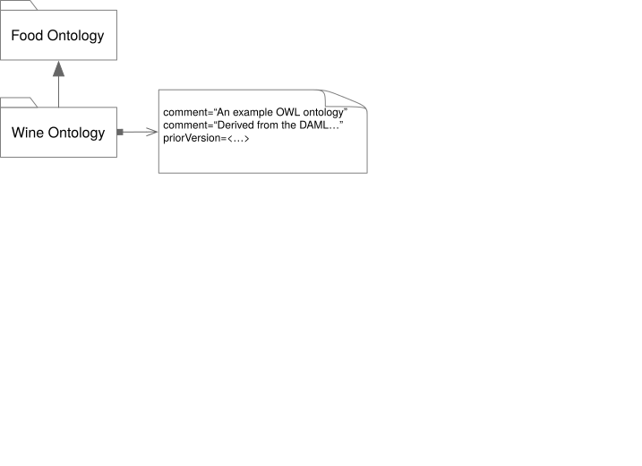
The Wine Class
Appendix: GraphViz
Nodes
Default node configuration.
node [fontname="Helvetica", fontcolor="black", color="#808080"];
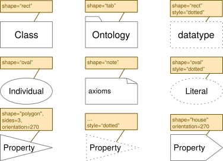
GraphViz Rendering
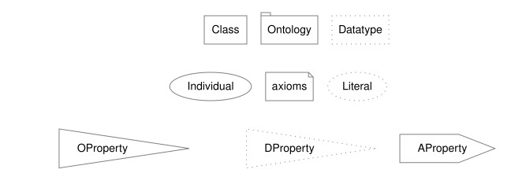
Show dot source
strict digraph {
rankdir="BT"
node [fontname="Helvetica", fontcolor="black", color="#808080"];
edge [fontname="Helvetica", fontcolor="black", color="#808080"];
subgraph cluster_01 {
rankdir="LR";
peripheries = 0;
Class [shape="rect"];
Ontology [ shape="tab"];
Datatype [shape="rect", style="dotted"];
};
subgraph cluster_02 {
rankdir="LR";
peripheries = 0;
Individual [shape="ellipse"];
axioms [ shape="note"];
Literal [shape="ellipse", style="dotted"];
};
subgraph cluster_03 {
rankdir="LR";
peripheries = 0;
OProperty [shape="polygon", sides=3, orientation=270];
DProperty [shape="polygon", sides=3, orientation=270, style="dotted"];
AProperty [shape="house", orientation=270];
};
axioms -> Ontology [style="invisible", dir="none"];
DProperty -> axioms [style="invisible", dir="none"];
}
Literals
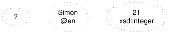
Show dot source
strict digraph {
rankdir="LR"
node [fontname="Helvetica", fontcolor="black", color="#808080"];
edge [fontname="Helvetica", fontcolor="black", color="#808080"];
Literal [shape="ellipse", style="dotted", label="?"];
LanguageString [shape="ellipse", style="dotted", label=<
<TABLE BORDER="0" CELLBORDER="0" CELLPADDING="0" CELLSPACING="0">
<TR>
<TD>Simon</TD>
</TR>
<HR/>
<TR>
<TD>@en</TD>
</TR>
</TABLE>
>];
TypedLiteral [shape="ellipse", style="dotted", label=<
<TABLE BORDER="0" CELLBORDER="0" CELLPADDING="0" CELLSPACING="0">
<TR>
<TD>21</TD>
</TR>
<HR/>
<TR>
<TD>xsd:integer</TD>
</TR>
</TABLE>
>];
Literal -> LanguageString [style="invisible", dir="none"];
LanguageString -> TypedLiteral [style="invisible", dir="none"];
}